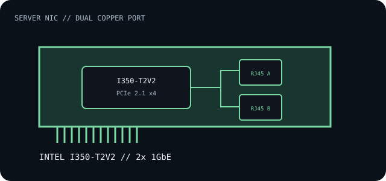

[ INDIVIDUAL COMPONENT // EXPANSION CARDS ]
Intel Ethernet Server Adapter I350-T2V2
Dual-port copper Gigabit Ethernet PCI Express server adapter based on Intel's I350 controller family.

IDENTIFICATION: Intel product SKU 84804 identifies the I350-T2V2. Distinguish it from other I350 boards, OEM rebrands and the original T2; verify printed model, board revision and PCI IDs.
Specifications and compatibility
| Exact model / SKU | Intel Ethernet Server Adapter I350-T2V2, SKU 84804. |
|---|---|
| Controller | Intel Ethernet Controller I350 series. |
| Bus / host interface | PCI Express 2.1, 5.0 GT/s; x4 host link. Fit a slot with at least x4 electrical lanes and confirm board/firmware support. |
| Ethernet standards / rates | Dual 10BASE-T, 100BASE-TX and 1000BASE-T copper links (IEEE 802.3 family); each port negotiates independently. |
| Ports / connectors | Two RJ-45 copper ports; Intel specifies Cat 5 cabling to 100 m for the listed 1GbE link. |
| OS / driver compatibility | Intel Ethernet driver package and operating-system support matrix govern supported Windows and Linux/server releases. Older adapters may require a legacy package; verify driver availability before deployment. |
| Revision / host caveat | Product brief and adapter SKU are distinct from controller-only I350 parts. Confirm bracket, board revision and PCIe x4 electrical slot; do not rely on a longer x8/x16 connector to imply an x4 electrical link. |
Installation and archival notes
- Record both MAC addresses, PCI IDs, link partner, cable category and driver version.
- Check slot lane wiring, BIOS enumeration, bracket height and server airflow before installation.
- Use the Intel adapter-specific specifications for the exact SKU; product-family similarity does not establish equivalent firmware or OS support.
Manufacturer specifications and documentation
- Intel — I350-T2V2 specificationsSKU-specific port configuration, PCIe generation and system interface.
- Intel — Ethernet Server Adapter I350 product briefAdapter-family features, interface and installation context.
- Intel — Ethernet Adapter Complete Driver PackDrivers and release-specific operating-system support.